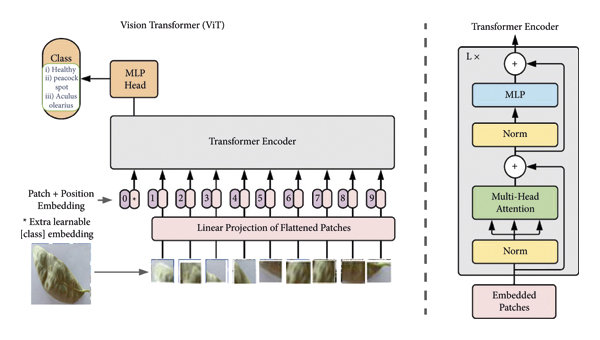

Vision Transformer (ViT) Implementation Guide
Vision Transformers (ViT) represent a significant paradigm shift in computer vision, applying the transformer architecture initially developed for NLP to image processing tasks. This guide walks through implementing a Vision Transformer from scratch using PyTorch.
Table of Contents
1. Introduction to Vision Transformers
Vision Transformers (ViT) were introduced in the paper “An Image is Worth 16x16 Words: Transformers for Image Recognition at Scale” by Dosovitskiy et al. in 2020. The core idea is to treat an image as a sequence of patches, similar to how words are treated in NLP, and process them using a transformer encoder.
Key advantages of ViTs include: - Global receptive field from the start - Ability to capture long-range dependencies - Scalability to large datasets - No inductive bias towards local processing (unlike CNNs)
2. Understanding the Architecture
The ViT architecture consists of the following components:
- Image Patching: Dividing the input image into fixed-size patches
- Patch Embedding: Linear projection of flattened patches
- Position Embedding: Adding positional information
- Transformer Encoder: Self-attention and feed-forward layers
- MLP Head: Final classification layer

3. Implementation
Let’s implement each component of the Vision Transformer step by step.
Image Patching
First, we need to divide the input image into fixed-size patches. For a typical ViT, these are 16×16 pixel patches.
import torch
import torch.nn as nn
import torch.nn.functional as F
class PatchEmbedding(nn.Module):
def __init__(self, image_size, patch_size, in_channels, embed_dim):
super().__init__()
self.image_size = image_size
self.patch_size = patch_size
self.num_patches = (image_size // patch_size) ** 2
# Convert image into patches and embed them
# Instead of using einops, we'll use standard PyTorch operations
self.projection = nn.Conv2d(
in_channels, embed_dim,
kernel_size=patch_size, stride=patch_size
)
def forward(self, x):
# x: (batch_size, channels, height, width)
# Convert image into patches using convolution
x = self.projection(x) # (batch_size, embed_dim, grid_height, grid_width)
# Flatten spatial dimensions and transpose to get
# (batch_size, num_patches, embed_dim)
batch_size = x.shape[0]
x = x.flatten(2) # (batch_size, embed_dim, num_patches)
x = x.transpose(1, 2) # (batch_size, num_patches, embed_dim)
return xPatch Embedding
After patching, we need to add a learnable class token and position embeddings.
class VisionTransformer(nn.Module):
def __init__(self, image_size, patch_size, in_channels, num_classes,
embed_dim, depth, num_heads, mlp_ratio=4,
dropout_rate=0.1):
super().__init__()
self.patch_embedding = PatchEmbedding(
image_size, patch_size, in_channels, embed_dim)
self.num_patches = self.patch_embedding.num_patches
# Class token
self.cls_token = nn.Parameter(torch.zeros(1, 1, embed_dim))
# Position embedding for patches + class token
self.pos_embedding = nn.Parameter(
torch.zeros(1, self.num_patches + 1, embed_dim))
self.dropout = nn.Dropout(dropout_rate)Position Embedding
The position embeddings are added to provide spatial information:
def forward(self, x):
# Get patch embeddings
x = self.patch_embedding(x) # (B, num_patches, embed_dim)
# Add class token
batch_size = x.shape[0]
cls_tokens = self.cls_token.expand(batch_size, -1, -1) # (B, 1, embed_dim)
x = torch.cat((cls_tokens, x), dim=1) # (B, num_patches + 1, embed_dim)
# Add position embedding
x = x + self.pos_embedding
x = self.dropout(x)Transformer Encoder
Next, let’s implement the transformer encoder blocks:
class MultiHeadAttention(nn.Module):
def __init__(self, embed_dim, num_heads, dropout_rate=0.1):
super().__init__()
self.num_heads = num_heads
self.head_dim = embed_dim // num_heads
self.scale = self.head_dim ** -0.5
self.qkv = nn.Linear(embed_dim, embed_dim * 3)
self.proj = nn.Linear(embed_dim, embed_dim)
self.dropout = nn.Dropout(dropout_rate)
def forward(self, x):
batch_size, seq_len, embed_dim = x.shape
# Get query, key, and value projections
qkv = self.qkv(x)
qkv = qkv.reshape(batch_size, seq_len, 3, self.num_heads, self.head_dim)
qkv = qkv.permute(2, 0, 3, 1, 4) # (3, B, H, N, D)
q, k, v = qkv[0], qkv[1], qkv[2] # Each is (B, H, N, D)
# Attention
attn = (q @ k.transpose(-2, -1)) * self.scale # (B, H, N, N)
attn = attn.softmax(dim=-1)
attn = self.dropout(attn)
# Apply attention to values
out = (attn @ v).transpose(1, 2) # (B, N, H, D)
out = out.reshape(batch_size, seq_len, embed_dim) # (B, N, E)
out = self.proj(out)
return out
class TransformerEncoder(nn.Module):
def __init__(self, embed_dim, num_heads, mlp_ratio=4, dropout_rate=0.1):
super().__init__()
# Layer normalization
self.norm1 = nn.LayerNorm(embed_dim)
# Multi-head self-attention
self.attn = MultiHeadAttention(embed_dim, num_heads, dropout_rate)
self.dropout1 = nn.Dropout(dropout_rate)
# Layer normalization
self.norm2 = nn.LayerNorm(embed_dim)
# MLP block
mlp_hidden_dim = int(embed_dim * mlp_ratio)
self.mlp = nn.Sequential(
nn.Linear(embed_dim, mlp_hidden_dim),
nn.GELU(),
nn.Dropout(dropout_rate),
nn.Linear(mlp_hidden_dim, embed_dim),
nn.Dropout(dropout_rate)
)
def forward(self, x):
# Apply layer normalization and self-attention
attn_output = self.attn(self.norm1(x))
x = x + self.dropout1(attn_output)
# Apply MLP block with residual connection
x = x + self.mlp(self.norm2(x))
return xNow, let’s update our main ViT class to include the transformer encoder blocks:
class VisionTransformer(nn.Module):
def __init__(self, image_size, patch_size, in_channels, num_classes,
embed_dim, depth, num_heads, mlp_ratio=4,
dropout_rate=0.1):
super().__init__()
self.patch_embedding = PatchEmbedding(
image_size, patch_size, in_channels, embed_dim)
self.num_patches = self.patch_embedding.num_patches
# Class token
self.cls_token = nn.Parameter(torch.zeros(1, 1, embed_dim))
# Position embedding for patches + class token
self.pos_embedding = nn.Parameter(
torch.zeros(1, self.num_patches + 1, embed_dim))
self.dropout = nn.Dropout(dropout_rate)
# Transformer encoder blocks
self.transformer_blocks = nn.ModuleList([
TransformerEncoder(embed_dim, num_heads, mlp_ratio, dropout_rate)
for _ in range(depth)
])
# Layer normalization
self.norm = nn.LayerNorm(embed_dim)MLP Head
Finally, let’s add the classification head and complete the forward pass:
class VisionTransformer(nn.Module):
def __init__(self, image_size, patch_size, in_channels, num_classes,
embed_dim, depth, num_heads, mlp_ratio=4,
dropout_rate=0.1):
super().__init__()
self.patch_embedding = PatchEmbedding(
image_size, patch_size, in_channels, embed_dim)
self.num_patches = self.patch_embedding.num_patches
# Class token
self.cls_token = nn.Parameter(torch.zeros(1, 1, embed_dim))
# Position embedding for patches + class token
self.pos_embedding = nn.Parameter(
torch.zeros(1, self.num_patches + 1, embed_dim))
self.dropout = nn.Dropout(dropout_rate)
# Transformer encoder blocks
self.transformer_blocks = nn.ModuleList([
TransformerEncoder(embed_dim, num_heads, mlp_ratio, dropout_rate)
for _ in range(depth)
])
# Layer normalization
self.norm = nn.LayerNorm(embed_dim)
# Classification head
self.mlp_head = nn.Linear(embed_dim, num_classes)
# Initialize weights
self._init_weights()
def _init_weights(self):
# Initialize patch embedding and MLP heads
nn.init.normal_(self.cls_token, std=0.02)
nn.init.normal_(self.pos_embedding, std=0.02)
def forward(self, x):
# Get patch embeddings
x = self.patch_embedding(x) # (B, num_patches, embed_dim)
# Add class token
batch_size = x.shape[0]
cls_tokens = self.cls_token.expand(batch_size, -1, -1) # (B, 1, embed_dim)
x = torch.cat((cls_tokens, x), dim=1) # (B, num_patches + 1, embed_dim)
# Add position embedding
x = x + self.pos_embedding
x = self.dropout(x)
# Apply transformer blocks
for block in self.transformer_blocks:
x = block(x)
# Apply final layer normalization
x = self.norm(x)
# Take class token for classification
cls_token_final = x[:, 0]
# Classification
return self.mlp_head(cls_token_final)4. Training the Model
Let’s implement a training function for our Vision Transformer:
def train_vit(model, train_loader, optimizer, criterion, device, epochs=10):
model.train()
for epoch in range(epochs):
running_loss = 0.0
correct = 0
total = 0
for batch_idx, (inputs, targets) in enumerate(train_loader):
inputs, targets = inputs.to(device), targets.to(device)
# Zero the gradients
optimizer.zero_grad()
# Forward pass
outputs = model(inputs)
loss = criterion(outputs, targets)
# Backward pass and optimize
loss.backward()
optimizer.step()
# Statistics
running_loss += loss.item()
_, predicted = outputs.max(1)
total += targets.size(0)
correct += predicted.eq(targets).sum().item()
# Print statistics every 100 batches
if batch_idx % 100 == 99:
print(f'Epoch: {epoch+1}, Batch: {batch_idx+1}, '
f'Loss: {running_loss/100:.3f}, '
f'Accuracy: {100.*correct/total:.2f}%')
running_loss = 0.0
# Epoch statistics
print(f'Epoch {epoch+1} completed. '
f'Accuracy: {100.*correct/total:.2f}%')Example usage:
import torch.optim as optim
from torchvision import datasets, transforms
from torch.utils.data import DataLoader
# Set device
device = torch.device('cuda' if torch.cuda.is_available() else 'cpu')
# Create ViT model
model = VisionTransformer(
image_size=224,
patch_size=16,
in_channels=3,
num_classes=10,
embed_dim=768,
depth=12,
num_heads=12,
mlp_ratio=4,
dropout_rate=0.1
).to(device)
# Define loss function and optimizer
criterion = nn.CrossEntropyLoss()
optimizer = optim.Adam(model.parameters(), lr=1e-3)
# Load data
transform = transforms.Compose([
transforms.Resize(224),
transforms.ToTensor(),
transforms.Normalize(mean=[0.485, 0.456, 0.406], std=[0.229, 0.224, 0.225])
])
train_dataset = datasets.FakeData(
transform=transforms.ToTensor()
)
train_loader = DataLoader(train_dataset, batch_size=32, shuffle=True, num_workers=4)
# Train model
train_vit(model, train_loader, optimizer, criterion, device, epochs=10)5. Inference and Usage
Here’s how to use the model for inference:
def inference(model, image_tensor, device):
model.eval()
with torch.no_grad():
image_tensor = image_tensor.unsqueeze(0).to(device) # Add batch dimension
output = model(image_tensor)
probabilities = F.softmax(output, dim=1)
predicted_class = torch.argmax(probabilities, dim=1)
return predicted_class.item(), probabilities[0]
# Example usage
image = transform(image).to(device)
predicted_class, probabilities = inference(model, image, device)
print(f"Predicted class: {predicted_class}")
print(f"Confidence: {probabilities[predicted_class]:.4f}")6. Optimization Techniques
To improve the training and performance of ViT models, consider these optimization techniques:
Custom Attention Implementation
The standard attention implementation can be memory-intensive. You can use a more efficient implementation:
def efficient_attention(q, k, v, mask=None):
# q, k, v: [batch_size, num_heads, seq_len, head_dim]
# Scaled dot-product attention
scale = q.size(-1) ** -0.5
attention = torch.matmul(q, k.transpose(-2, -1)) * scale # [B, H, L, L]
if mask is not None:
attention = attention.masked_fill(mask == 0, -1e9)
attention = F.softmax(attention, dim=-1)
output = torch.matmul(attention, v) # [B, H, L, D]
return outputMixed Precision Training
Use mixed precision training to reduce memory usage and increase training speed:
from torch.cuda.amp import autocast, GradScaler
def train_with_mixed_precision(model, train_loader, optimizer, criterion, device, epochs=10):
scaler = GradScaler()
model.train()
for epoch in range(epochs):
running_loss = 0.0
for batch_idx, (inputs, targets) in enumerate(train_loader):
inputs, targets = inputs.to(device), targets.to(device)
optimizer.zero_grad()
# Use autocast for mixed precision
with autocast():
outputs = model(inputs)
loss = criterion(outputs, targets)
# Scale gradients and optimize
scaler.scale(loss).backward()
scaler.step(optimizer)
scaler.update()
running_loss += loss.item()
# Rest of the training loop...Regularization Techniques
Implement regularization techniques such as stochastic depth to prevent overfitting:
class StochasticDepth(nn.Module):
def __init__(self, drop_prob=0.1):
super().__init__()
self.drop_prob = drop_prob
def forward(self, x):
if not self.training or self.drop_prob == 0.:
return x
keep_prob = 1 - self.drop_prob
shape = (x.shape[0],) + (1,) * (x.ndim - 1)
random_tensor = keep_prob + torch.rand(shape, dtype=x.dtype, device=x.device)
random_tensor.floor_() # binarize
output = x.div(keep_prob) * random_tensor
return output7. Advanced Variants
Several advanced variants of Vision Transformers have been developed:
DeiT (Data-efficient Image Transformer)
DeiT introduces a distillation token and a teacher-student strategy:
class DeiT(VisionTransformer):
def __init__(self, *args, **kwargs):
super().__init__(*args, **kwargs)
# Distillation token
self.dist_token = nn.Parameter(torch.zeros(1, 1, self.embed_dim))
# Update position embeddings to include distillation token
# Original position embeddings are for [class_token, patches]
# New position embeddings are for [class_token, dist_token, patches]
num_patches = self.patch_embedding.num_patches
new_pos_embed = nn.Parameter(torch.zeros(1, num_patches + 2, self.embed_dim))
# Initialize new position embeddings with the original ones
# Copy class token position embedding
new_pos_embed.data[:, 0:1, :] = self.pos_embedding.data[:, 0:1, :]
# Add a new position embedding for distillation token
new_pos_embed.data[:, 1:2, :] = self.pos_embedding.data[:, 0:1, :]
# Copy patch position embeddings
new_pos_embed.data[:, 2:, :] = self.pos_embedding.data[:, 1:, :]
self.pos_embedding = new_pos_embed
# Additional classification head for distillation
self.head_dist = nn.Linear(self.embed_dim, kwargs.get('num_classes', 1000))
def forward(self, x):
# Get patch embeddings
x = self.patch_embedding(x)
# Add class and distillation tokens
batch_size = x.shape[0]
cls_tokens = self.cls_token.expand(batch_size, -1, -1)
dist_tokens = self.dist_token.expand(batch_size, -1, -1)
x = torch.cat((cls_tokens, dist_tokens, x), dim=1)
# Add position embedding and apply dropout
x = x + self.pos_embedding
x = self.dropout(x)
# Apply transformer blocks
for block in self.transformer_blocks:
x = block(x)
# Apply final layer normalization
x = self.norm(x)
# Get class and distillation tokens
cls_token_final = x[:, 0]
dist_token_final = x[:, 1]
# Apply classification heads
x_cls = self.mlp_head(cls_token_final)
x_dist = self.head_dist(dist_token_final)
if self.training:
# During training, return both outputs
return x_cls, x_dist
else:
# During inference, return average
return (x_cls + x_dist) / 2Swin Transformer
Swin Transformer introduces hierarchical feature maps and shifted windows:
# This is a simplified conceptual implementation of the Swin Transformer block
class WindowAttention(nn.Module):
def __init__(self, dim, window_size, num_heads, qkv_bias=True, dropout=0.):
super().__init__()
self.dim = dim
self.window_size = window_size # (height, width)
self.num_heads = num_heads
self.scale = (dim // num_heads) ** -0.5
# Linear projections
self.qkv = nn.Linear(dim, dim * 3, bias=qkv_bias)
self.proj = nn.Linear(dim, dim)
# Define relative position bias
self.relative_position_bias_table = nn.Parameter(
torch.zeros((2 * window_size[0] - 1) * (2 * window_size[1] - 1), num_heads))
# Generate pair-wise relative position index for each token in the window
coords_h = torch.arange(self.window_size[0])
coords_w = torch.arange(self.window_size[1])
coords = torch.stack(torch.meshgrid([coords_h, coords_w], indexing="ij")) # 2, Wh, Ww
coords_flatten = torch.flatten(coords, 1) # 2, Wh*Ww
# Calculate relative positions
relative_coords = coords_flatten[:, :, None] - coords_flatten[:, None, :] # 2, Wh*Ww, Wh*Ww
relative_coords = relative_coords.permute(1, 2, 0).contiguous() # Wh*Ww, Wh*Ww, 2
relative_coords[:, :, 0] += self.window_size[0] - 1 # shift to start from 0
relative_coords[:, :, 1] += self.window_size[1] - 1
relative_coords[:, :, 0] *= 2 * self.window_size[1] - 1
relative_position_index = relative_coords.sum(-1) # Wh*Ww, Wh*Ww
self.register_buffer("relative_position_index", relative_position_index)
self.dropout = nn.Dropout(dropout)
def forward(self, x, mask=None):
B_, N, C = x.shape
# Generate QKV matrices
qkv = self.qkv(x).reshape(B_, N, 3, self.num_heads, C // self.num_heads)
qkv = qkv.permute(2, 0, 3, 1, 4) # 3, B_, num_heads, N, C//num_heads
q, k, v = qkv[0], qkv[1], qkv[2] # each has shape [B_, num_heads, N, C//num_heads]
# Scaled dot-product attention
q = q * self.scale
attn = (q @ k.transpose(-2, -1)) # B_, num_heads, N, N
# Add relative position bias
relative_position_bias = self.relative_position_bias_table[self.relative_position_index.view(-1)]
relative_position_bias = relative_position_bias.view(
self.window_size[0] * self.window_size[1],
self.window_size[0] * self.window_size[1],
-1) # Wh*Ww, Wh*Ww, num_heads
relative_position_bias = relative_position_bias.permute(2, 0, 1).contiguous() # num_heads, Wh*Ww, Wh*Ww
attn = attn + relative_position_bias.unsqueeze(0)
# Apply mask if needed
if mask is not None:
nW = mask.shape[0]
attn = attn.view(B_ // nW, nW, self.num_heads, N, N) + mask.unsqueeze(1).unsqueeze(0)
attn = attn.view(-1, self.num_heads, N, N)
# Apply softmax
attn = F.softmax(attn, dim=-1)
attn = self.dropout(attn)
# Apply attention to values
x = (attn @ v).transpose(1, 2).reshape(B_, N, C)
x = self.proj(x)
return xConclusion
Vision Transformers represent a significant advancement in computer vision, offering a different approach from traditional CNNs. This guide has covered the essential components for implementing a Vision Transformer from scratch, including image patching, position embeddings, transformer encoders, and classification heads.
By understanding these fundamentals, you can implement your own ViT models and experiment with various modifications to improve performance for specific tasks.
References
- Dosovitskiy, A., et al. (2020). “An Image is Worth 16x16 Words: Transformers for Image Recognition at Scale.” arXiv:2010.11929.
- Touvron, H., et al. (2021). “Training data-efficient image transformers & distillation through attention.” arXiv:2012.12877.
- Liu, Z., et al. (2021). “Swin Transformer: Hierarchical Vision Transformer using Shifted Windows.” arXiv:2103.14030.